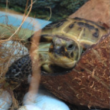

Это черепаха!
Черепа́хи (лат. Testudines) — один из четырёх современных отрядов пресмыкающихся, ископаемые останки которых прослеживаются на протяжении более 220 миллионов лет. Отряд содержит около 328 современных видов, группируемых в 14 семейств и два подотряда[1]. Экологически черепах подразделяют на морских и наземных, а наземных, в свою очередь, на сухопутных и пресноводных[2].